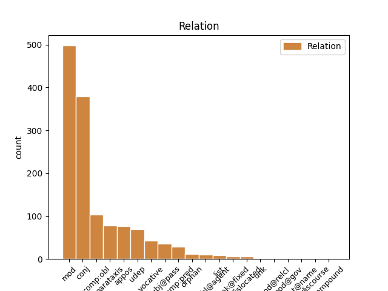
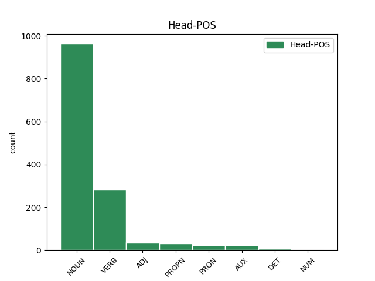
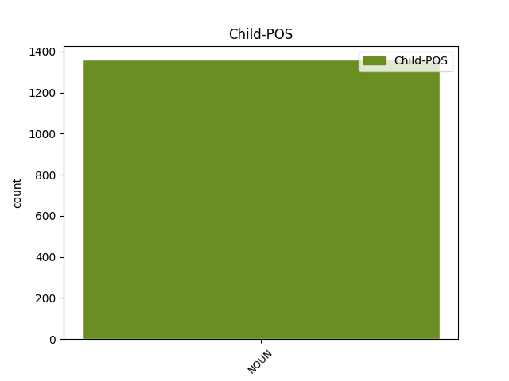

Distribution of features within this leaf



Agreement Rules sorted by frequency.
- When the dependent token is the modifer(mod) of the head token, and the head token is NOUN and the dependent token is NOUN.
1 И _ _ _ _ 0 _ _ _
2 так _ _ _ _ 0 _ _ _
3 и _ _ _ _ 0 _ _ _
4 играли _ _ _ _ 0 _ _ _
5 развеселые _ _ _ _ 0 _ _ _
6 каверы _ _ _ _ 0 _ _ _
7 на _ _ _ _ 0 _ _ _
8 Billy _ _ _ _ 0 _ _ _
9 Jean _ _ _ _ 0 _ _ _
10 и _ _ _ _ 0 _ _ _
11 Джо _ _ _ _ 0 _ _ _
12 Дассена _ _ _ _ 0 _ _ _
13 до _ _ _ _ 0 _ _ _
14 часу час NOUN _ Animacy=Inan|Case=Dat|Gender=Masc|Number=Sing 0 _ _ _
15 ночи ночь NOUN _ Animacy=Inan|Case=Gen|Gender=Fem|Number=Sing 14 mod _ _
16 ( _ _ _ _ 0 _ _ _
17 начав _ _ _ _ 0 _ _ _
18 в _ _ _ _ 0 _ _ _
19 10 _ _ _ _ 0 _ _ _
20 , _ _ _ _ 0 _ _ _
21 из _ _ _ _ 0 _ _ _
22 чего _ _ _ _ 0 _ _ _
23 сделаны _ _ _ _ 0 _ _ _
24 эти _ _ _ _ 0 _ _ _
25 мальчики _ _ _ _ 0 _ _ _
26 ?! _ _ _ _ 0 _ _ _
27 ) _ _ _ _ 0 _ _ _
28 . _ _ _ _ 0 _ _ _
1 Перед _ _ _ _ 0 _ _ _
2 сеансом _ _ _ _ 0 _ _ _
3 на _ _ _ _ 0 _ _ _
4 Гороховой _ _ _ _ 0 _ _ _
5 присели _ _ _ _ 0 _ _ _
6 у _ _ _ _ 0 _ _ _
7 раскрытого _ _ _ _ 0 _ _ _
8 окна _ _ _ _ 0 _ _ _
9 в _ _ _ _ 0 _ _ _
10 кофейном _ _ _ _ 0 _ _ _
11 кафе _ _ _ _ 0 _ _ _
12 , _ _ _ _ 0 _ _ _
13 заказали _ _ _ _ 0 _ _ _
14 фалафель фалафля NOUN _ Animacy=Inan|Case=Acc|Gender=Masc|Number=Sing 0 _ _ _
15 и _ _ _ _ 0 _ _ _
16 донер донер NOUN _ Animacy=Inan|Case=Acc|Gender=Masc|Number=Sing 14 conj _ SpaceAfter=No
17 , _ _ _ _ 0 _ _ _
18 стали _ _ _ _ 0 _ _ _
19 обсуждать _ _ _ _ 0 _ _ _
20 пиво _ _ _ _ 0 _ _ _
21 . _ _ _ _ 0 _ _ _
1 Еще _ _ _ _ 0 _ _ _
2 любопытнее _ _ _ _ 0 _ _ _
3 , _ _ _ _ 0 _ _ _
4 что _ _ _ _ 0 _ _ _
5 в _ _ _ _ 0 _ _ _
6 караоке караоке NOUN _ Animacy=Inan|Case=Loc|Gender=Masc|Number=Sing 0 _ _ _
7 - _ _ _ _ 0 _ _ _
8 баре бар NOUN _ Animacy=Inan|Case=Loc|Gender=Masc|Number=Sing 6 appos _ _
9 стояли _ _ _ _ 0 _ _ _
10 столы _ _ _ _ 0 _ _ _
11 с _ _ _ _ 0 _ _ _
12 девочками _ _ _ _ 0 _ _ _
13 и _ _ _ _ 0 _ _ _
14 столы _ _ _ _ 0 _ _ _
15 с _ _ _ _ 0 _ _ _
16 мужиками _ _ _ _ 0 _ _ _
17 . _ _ _ _ 0 _ _ _
1 Коммунистам коммунист NOUN _ Animacy=Anim|Case=Dat|Gender=Masc|Number=Plur 3 comp:obl _ _
2 не _ _ _ _ 0 _ _ _
3 дают давать VERB _ Aspect=Imp|Mood=Ind|Number=Plur|Person=3|Tense=Pres|VerbForm=Fin|Voice=Act 0 _ _ _
4 проводить _ _ _ _ 0 _ _ _
5 народные _ _ _ _ 0 _ _ _
6 законы _ _ _ _ 0 _ _ _
7 депутаты _ _ _ _ 0 _ _ _
8 ЕР _ _ _ _ 0 _ _ _
9 , _ _ _ _ 0 _ _ _
10 так _ _ _ _ 0 _ _ _
11 как _ _ _ _ 0 _ _ _
12 число _ _ _ _ 0 _ _ _
13 депутатов _ _ _ _ 0 _ _ _
14 ЕР _ _ _ _ 0 _ _ _
15 в _ _ _ _ 0 _ _ _
16 госдуме _ _ _ _ 0 _ _ _
17 в _ _ _ _ 0 _ _ _
18 з _ _ _ _ 0 _ _ _
19 раза _ _ _ _ 0 _ _ _
20 больше _ _ _ _ 0 _ _ _
21 , _ _ _ _ 0 _ _ _
22 чем _ _ _ _ 0 _ _ _
23 депутатов _ _ _ _ 0 _ _ _
24 КПРФ _ _ _ _ 0 _ _ _
25 ! _ _ _ _ 0 _ _ _
1 Французы _ _ _ _ 0 _ _ _
2 , _ _ _ _ 0 _ _ _
3 которые _ _ _ _ 0 _ _ _
4 были _ _ _ _ 0 _ _ _
5 у _ _ _ _ 0 _ _ _
6 Саши _ _ _ _ 0 _ _ _
7 на _ _ _ _ 0 _ _ _
8 радио _ _ _ _ 0 _ _ _
9 за _ _ _ _ 0 _ _ _
10 день _ _ _ _ 0 _ _ _
11 до _ _ _ _ 0 _ _ _
12 , _ _ _ _ 0 _ _ _
13 скачут скачать VERB _ Aspect=Perf|Mood=Ind|Number=Plur|Person=3|Tense=Fut|VerbForm=Fin|Voice=Act 0 _ _ _
14 козлами козел NOUN _ Animacy=Inan|Case=Ins|Gender=Masc|Number=Plur 13 udep _ _
15 по _ _ _ _ 0 _ _ _
16 сцене _ _ _ _ 0 _ _ _
17 , _ _ _ _ 0 _ _ _
18 машут _ _ _ _ 0 _ _ _
19 седыми _ _ _ _ 0 _ _ _
20 дредами _ _ _ _ 0 _ _ _
21 - _ _ _ _ 0 _ _ _
22 не _ _ _ _ 0 _ _ _
23 юные _ _ _ _ 0 _ _ _
24 , _ _ _ _ 0 _ _ _
25 но _ _ _ _ 0 _ _ _
26 до _ _ _ _ 0 _ _ _
27 чего _ _ _ _ 0 _ _ _
28 же _ _ _ _ 0 _ _ _
29 бодрые _ _ _ _ 0 _ _ _
30 ! _ _ _ _ 0 _ _ _
1 Спите спать VERB _ Aspect=Perf|Mood=Imp|Number=Plur|Person=2|VerbForm=Fin|Voice=Act 0 _ _ _
2 , _ _ _ _ 0 _ _ _
3 [ _ _ _ _ 0 _ _ _
4 равнины равнина NOUN _ Animacy=Inan|Case=Nom|Gender=Fem|Number=Plur 1 vocative _ SpaceAfter=No
5 ] _ _ _ _ 0 _ _ _
6 угрюмые _ _ _ _ 0 _ _ _
7 ! _ _ _ _ 0 _ _ _
1 И _ _ _ _ 0 _ _ _
2 так _ _ _ _ 0 _ _ _
3 и _ _ _ _ 0 _ _ _
4 играли _ _ _ _ 0 _ _ _
5 развеселые _ _ _ _ 0 _ _ _
6 каверы _ _ _ _ 0 _ _ _
7 на _ _ _ _ 0 _ _ _
8 Billy _ _ _ _ 0 _ _ _
9 Jean _ _ _ _ 0 _ _ _
10 и _ _ _ _ 0 _ _ _
11 Джо _ _ _ _ 0 _ _ _
12 Дассена _ _ _ _ 0 _ _ _
13 до _ _ _ _ 0 _ _ _
14 часу _ _ _ _ 0 _ _ _
15 ночи _ _ _ _ 0 _ _ _
16 ( _ _ _ _ 0 _ _ _
17 начав _ _ _ _ 0 _ _ _
18 в _ _ _ _ 0 _ _ _
19 10 _ _ _ _ 0 _ _ _
20 , _ _ _ _ 0 _ _ _
21 из _ _ _ _ 0 _ _ _
22 чего _ _ _ _ 0 _ _ _
23 сделаны делать VERB _ Aspect=Perf|Number=Plur|Tense=Past|Variant=Short|VerbForm=Part|Voice=Pass 0 _ _ _
24 эти _ _ _ _ 0 _ _ _
25 мальчики мальчик NOUN _ Animacy=Anim|Case=Nom|Gender=Masc|Number=Plur 23 subj@pass _ SpaceAfter=No
26 ?! _ _ _ _ 0 _ _ _
27 ) _ _ _ _ 0 _ _ _
28 . _ _ _ _ 0 _ _ _
1 Мы _ _ _ _ 0 _ _ _
2 съели _ _ _ _ 0 _ _ _
3 3 _ _ _ _ 0 _ _ _
4 стейка _ _ _ _ 0 _ _ _
5 с _ _ _ _ 0 _ _ _
6 пивом _ _ _ _ 0 _ _ _
7 ( _ _ _ _ 0 _ _ _
8 мальчики _ _ _ _ 0 _ _ _
9 ) _ _ _ _ 0 _ _ _
10 и _ _ _ _ 0 _ _ _
11 содой сода NOUN _ Animacy=Inan|Case=Ins|Gender=Fem|Number=Sing 0 _ _ _
12 ( _ _ _ _ 0 _ _ _
13 девочка девочка NOUN _ Animacy=Anim|Case=Nom|Gender=Fem|Number=Sing 11 parataxis _ SpaceAfter=No
14 ) _ _ _ _ 0 _ _ _
15 . _ _ _ _ 0 _ _ _
1 Вот _ _ _ _ 0 _ _ _
2 так _ _ _ _ 0 _ _ _
3 же _ _ _ _ 0 _ _ _
4 , _ _ _ _ 0 _ _ _
5 уязвлен _ _ _ _ 0 _ _ _
6 и _ _ _ _ 0 _ _ _
7 выбит _ _ _ _ 0 _ _ _
8 из _ _ _ _ 0 _ _ _
9 берлоги _ _ _ _ 0 _ _ _
10 , _ _ _ _ 0 _ _ _
11 Кабан _ _ _ _ 0 _ _ _
12 , _ _ _ _ 0 _ _ _
13 почуя _ _ _ _ 0 _ _ _
14 смерти _ _ _ _ 0 _ _ _
15 вкус _ _ _ _ 0 _ _ _
16 , _ _ _ _ 0 _ _ _
17 На _ _ _ _ 0 _ _ _
18 землю _ _ _ _ 0 _ _ _
19 валится валиться VERB VERB Aspect=Imp|Mood=Ind|Number=Sing|Person=3|Tense=Pres|VerbForm=Fin|Voice=Mid 0 _ _ _
20 , _ _ _ _ 0 _ _ _
21 раскидывая _ _ _ _ 0 _ _ _
22 ноги _ _ _ _ 0 _ _ _
23 , _ _ _ _ 0 _ _ _
24 -- _ _ _ _ 0 _ _ _
25 В _ _ _ _ 0 _ _ _
26 затылок _ _ _ _ 0 _ _ _
27 солнечный _ _ _ _ 0 _ _ _
28 укус укус NOUN NOUN Animacy=Inan|Case=Nom|Gender=Masc|Number=Sing 19 parataxis _ SpaceAfter=No
29 , _ _ _ _ 0 _ _ _
30 -- _ _ _ _ 0 _ _ _
31 И _ _ _ _ 0 _ _ _
32 с _ _ _ _ 0 _ _ _
33 пеною _ _ _ _ 0 _ _ _
34 у _ _ _ _ 0 _ _ _
35 рта _ _ _ _ 0 _ _ _
36 , _ _ _ _ 0 _ _ _
37 и _ _ _ _ 0 _ _ _
38 высунув _ _ _ _ 0 _ _ _
39 наружу _ _ _ _ 0 _ _ _
40 Язык _ _ _ _ 0 _ _ _
41 , _ _ _ _ 0 _ _ _
42 рвет _ _ _ _ 0 _ _ _
43 крепкие _ _ _ _ 0 _ _ _
44 силки _ _ _ _ 0 _ _ _
45 ; _ _ _ _ 0 _ _ _
1 В _ _ _ _ 0 _ _ _
2 понедельник _ _ _ _ 0 _ _ _
3 шли _ _ _ _ 0 _ _ _
4 из _ _ _ _ 0 _ _ _
5 кино _ _ _ _ 0 _ _ _
6 , _ _ _ _ 0 _ _ _
7 каждые _ _ _ _ 0 _ _ _
8 пять _ _ _ _ 0 _ _ _
9 минут _ _ _ _ 0 _ _ _
10 встречая _ _ _ _ 0 _ _ _
11 знакомых _ _ _ _ 0 _ _ _
12 ( _ _ _ _ 0 _ _ _
13 Питер Питер PROPN _ Animacy=Inan|Case=Nom|Gender=Masc|Number=Sing 0 _ _ _
14 , _ _ _ _ 0 _ _ _
15 лето лето NOUN _ Animacy=Inan|Case=Nom|Gender=Neut|Number=Sing 13 conj _ SpaceAfter=No
16 , _ _ _ _ 0 _ _ _
17 белые _ _ _ _ 0 _ _ _
18 ночи _ _ _ _ 0 _ _ _
19 , _ _ _ _ 0 _ _ _
20 ага _ _ _ _ 0 _ _ _
21 , _ _ _ _ 0 _ _ _
22 а _ _ _ _ 0 _ _ _
23 я _ _ _ _ 0 _ _ _
24 и _ _ _ _ 0 _ _ _
25 не _ _ _ _ 0 _ _ _
26 в _ _ _ _ 0 _ _ _
27 платье _ _ _ _ 0 _ _ _
28 , _ _ _ _ 0 _ _ _
29 и _ _ _ _ 0 _ _ _
30 не _ _ _ _ 0 _ _ _
31 нарумянена _ _ _ _ 0 _ _ _
32 ) _ _ _ _ 0 _ _ _
33 . _ _ _ _ 0 _ _ _
1 Это _ _ _ _ 0 _ _ _
2 Харьков _ _ _ _ 0 _ _ _
3 такой _ _ _ _ 0 _ _ _
4 тусовочный _ _ _ _ 0 _ _ _
5 ( _ _ _ _ 0 _ _ _
6 я _ _ _ _ 0 _ _ _
7 замечу _ _ _ _ 0 _ _ _
8 отдельно _ _ _ _ 0 _ _ _
9 , _ _ _ _ 0 _ _ _
10 что _ _ _ _ 0 _ _ _
11 в _ _ _ _ 0 _ _ _
12 половине _ _ _ _ 0 _ _ _
13 четвертого _ _ _ _ 0 _ _ _
14 утра _ _ _ _ 0 _ _ _
15 мы _ _ _ _ 0 _ _ _
16 уходили _ _ _ _ 0 _ _ _
17 первыми _ _ _ _ 0 _ _ _
18 , _ _ _ _ 0 _ _ _
19 и _ _ _ _ 0 _ _ _
20 это _ _ _ _ 0 _ _ _
21 был быть AUX _ Aspect=Imp|Gender=Masc|Mood=Ind|Number=Sing|Tense=Past|VerbForm=Fin|Voice=Act 0 _ _ _
22 четверг четверг NOUN _ Animacy=Anim|Case=Nom|Gender=Masc|Number=Sing 21 comp:pred _ SpaceAfter=No
23 ! _ _ _ _ 0 _ _ _
24 ) _ _ _ _ 0 _ _ _
25 . _ _ _ _ 0 _ _ _
1 Посмотрел смотреть VERB _ Aspect=Perf|Gender=Masc|Mood=Ind|Number=Sing|Tense=Past|VerbForm=Fin|Voice=Act 0 _ _ _
2 твою _ _ _ _ 0 _ _ _
3 табличку _ _ _ _ 0 _ _ _
4 , _ _ _ _ 0 _ _ _
5 золотце золотце NOUN _ Animacy=Inan|Case=Voc|Gender=Neut|Number=Sing 1 conj _ SpaceAfter=No
6 . _ _ _ _ 0 _ _ _
1 Довольно _ _ _ _ 0 _ _ _
2 и _ _ _ _ 0 _ _ _
3 того _ _ _ _ 0 _ _ _
4 , _ _ _ _ 0 _ _ _
5 что _ _ _ _ 0 _ _ _
6 журналист _ _ _ _ 0 _ _ _
7 сухой _ _ _ _ 0 _ _ _
8 В _ _ _ _ 0 _ _ _
9 журнале _ _ _ _ 0 _ _ _
10 чтит чтить VERB _ Aspect=Imp|Mood=Ind|Number=Sing|Person=3|Tense=Pres|VerbForm=Fin|Voice=Act 0 _ _ _
11 себя _ _ _ _ 0 _ _ _
12 романтиков _ _ _ _ 0 _ _ _
13 главой глава NOUN _ Animacy=Anim|Case=Ins|Gender=Masc|Number=Sing 10 comp:pred _ SpaceAfter=No
14 . _ _ _ _ 0 _ _ _
1 девочка _ _ _ _ 0 _ _ _
2 тоже _ _ _ _ 0 _ _ _
3 говорит _ _ _ _ 0 _ _ _
4 а _ _ _ _ 0 _ _ _
5 лен _ _ _ _ 0 _ _ _
6 -- _ _ _ _ 0 _ _ _
7 ты _ _ _ _ 0 _ _ _
8 дан _ _ _ _ 0 _ _ _
9 – _ _ _ _ 0 _ _ _
10 ты _ _ _ _ 0 _ _ _
11 бур _ _ _ _ 0 _ _ _
12 забор _ _ _ _ 0 _ _ _
13 лови _ _ _ _ 0 _ _ _
14 хоро _ _ _ _ 0 _ _ _
15 -- _ _ _ _ 0 _ _ _
16 ший _ _ _ _ 0 _ _ _
17 пе _ _ _ _ 0 _ _ _
18 -- _ _ _ _ 0 _ _ _
19 реход _ _ _ _ 0 _ _ _
20 твоя _ _ _ _ 0 _ _ _
21 колода _ _ _ _ 0 _ _ _
22 пе _ _ _ _ 0 _ _ _
23 -- _ _ _ _ 0 _ _ _
24 региб _ _ _ _ 0 _ _ _
25 а _ _ _ _ 0 _ _ _
26 па _ _ _ _ 0 _ _ _
27 -- _ _ _ _ 0 _ _ _
28 рахода _ _ _ _ 0 _ _ _
29 са сапог NOUN _ Animacy=Inan|Case=Nom|Gender=Masc|Number=Plur 0 _ _ _
30 -- _ _ _ _ 0 _ _ _
31 поги goeswith NOUN NOUN Animacy=Inan|Case=Nom|Gender=Masc|Number=Plur 29 list _ _
1 У _ _ _ _ 0 _ _ _
2 Революции _ _ _ _ 0 _ _ _
3 в _ _ _ _ 0 _ _ _
4 глазах _ _ _ _ 0 _ _ _
5 читаю _ _ _ _ 0 _ _ _
6 синих _ _ _ _ 0 _ _ _
7 Необходимость _ _ _ _ 0 _ _ _
8 беспощадных _ _ _ _ 0 _ _ _
9 мер _ _ _ _ 0 _ _ _
10 СССР _ _ _ _ 0 _ _ _
11 [ _ _ _ _ 0 _ _ _
12 эсесесер _ _ _ _ 0 _ _ _
13 ] _ _ _ _ 0 _ _ _
14 СССР _ _ _ _ 0 _ _ _
15 [ _ _ _ _ 0 _ _ _
16 эсесесер _ _ _ _ 0 _ _ _
17 ] _ _ _ _ 0 _ _ _
18 СССР _ _ _ _ 0 _ _ _
19 [ _ _ _ _ 0 _ _ _
20 эсесесер _ _ _ _ 0 _ _ _
21 ] _ _ _ _ 0 _ _ _
22 СССР СССР PROPN NOUN Animacy=Inan|Case=Gen|Gender=Masc|Number=Sing 0 _ _ _
23 [ _ _ _ _ 0 _ _ _
24 эсесесер эсесесер NOUN NOUN Animacy=Inan|Case=Gen|Gender=Masc|Number=Sing 22 parataxis _ SpaceAfter=No
25 ] _ _ _ _ 0 _ _ _
26 . _ _ _ _ 0 _ _ _
1 А _ _ _ _ 0 _ _ _
2 вы _ _ _ _ 0 _ _ _
3 , _ _ _ _ 0 _ _ _
4 о _ _ _ _ 0 _ _ _
5 гении _ _ _ _ 0 _ _ _
6 , _ _ _ _ 0 _ _ _
7 лишенные _ _ _ _ 0 _ _ _
8 приюта _ _ _ _ 0 _ _ _
9 , _ _ _ _ 0 _ _ _
10 Вы вы PRON PRON Case=Nom|Number=Plur|Person=2 0 _ _ _
11 , _ _ _ _ 0 _ _ _
12 Бейрон _ _ _ _ 0 _ _ _
13 , _ _ _ _ 0 _ _ _
14 Дант _ _ _ _ 0 _ _ _
15 и _ _ _ _ 0 _ _ _
16 Тасс _ _ _ _ 0 _ _ _
17 , _ _ _ _ 0 _ _ _
18 герои герой NOUN NOUN Animacy=Anim|Case=Nom|Gender=Masc|Number=Plur 10 appos _ _
19 без _ _ _ _ 0 _ _ _
20 войны _ _ _ _ 0 _ _ _
21 , _ _ _ _ 0 _ _ _
22 Для _ _ _ _ 0 _ _ _
23 вас _ _ _ _ 0 _ _ _
24 не _ _ _ _ 0 _ _ _
25 создана _ _ _ _ 0 _ _ _
26 в _ _ _ _ 0 _ _ _
27 теперешнем _ _ _ _ 0 _ _ _
28 минута _ _ _ _ 0 _ _ _
29 , _ _ _ _ 0 _ _ _
30 Но _ _ _ _ 0 _ _ _
31 веки _ _ _ _ 0 _ _ _
32 в _ _ _ _ 0 _ _ _
33 будущем _ _ _ _ 0 _ _ _
34 даны _ _ _ _ 0 _ _ _
35 . _ _ _ _ 0 _ _ _
1 Так _ _ _ _ 0 _ _ _
2 рушат _ _ _ _ 0 _ _ _
3 стихии _ _ _ _ 0 _ _ _
4 плотину _ _ _ _ 0 _ _ _
5 морскую _ _ _ _ 0 _ _ _
6 , _ _ _ _ 0 _ _ _
7 И _ _ _ _ 0 _ _ _
8 дамбами _ _ _ _ 0 _ _ _
9 сдерживающийся _ _ _ _ 0 _ _ _
10 океан _ _ _ _ 0 _ _ _
11 Бросается _ _ _ _ 0 _ _ _
12 зверем _ _ _ _ 0 _ _ _
13 на _ _ _ _ 0 _ _ _
14 сушу _ _ _ _ 0 _ _ _
15 , _ _ _ _ 0 _ _ _
16 ликуя _ _ _ _ 0 _ _ _
17 , _ _ _ _ 0 _ _ _
18 Виденьем виденье NOUN NOUN Animacy=Inan|Case=Ins|Gender=Neut|Number=Sing 21 udep _ _
19 просторов _ _ _ _ 0 _ _ _
20 открывшихся _ _ _ _ 0 _ _ _
21 пьян пьяный ADJ ADJ Degree=Pos|Gender=Masc|Number=Sing|Variant=Short 0 _ _ _
22 . _ _ _ _ 0 _ _ _
1 могучий _ _ _ _ 0 _ _ _
2 панцырь панцырь NOUN NOUN Animacy=Anim|Case=Nom|Gender=Masc|Number=Sing 3 subj@pass _ _
3 был быть AUX VERB Aspect=Imp|Gender=Masc|Mood=Ind|Number=Sing|Tense=Past|VerbForm=Fin|Voice=Act 0 _ _ _
4 утыкан _ _ _ _ 0 _ _ _
5 шмелями _ _ _ _ 0 _ _ _
6 плавунами _ _ _ _ 0 _ _ _
7 и _ _ _ _ 0 _ _ _
8 львами _ _ _ _ 0 _ _ _
1 Ведь _ _ _ _ 0 _ _ _
2 Цыганов _ _ _ _ 0 _ _ _
3 мне _ _ _ _ 0 _ _ _
4 так _ _ _ _ 0 _ _ _
5 нравится _ _ _ _ 0 _ _ _
6 , _ _ _ _ 0 _ _ _
7 он _ _ _ _ 0 _ _ _
8 мрачный _ _ _ _ 0 _ _ _
9 , _ _ _ _ 0 _ _ _
10 гипермногодетный гипермногодетный ADJ _ Case=Nom|Degree=Pos|Gender=Masc|Number=Sing 0 _ _ _
11 , _ _ _ _ 0 _ _ _
12 и _ _ _ _ 0 _ _ _
13 то _ _ _ _ 0 _ _ _
14 ли _ _ _ _ 0 _ _ _
15 подлец подлец NOUN _ Animacy=Anim|Case=Nom|Gender=Masc|Number=Sing 10 conj _ SpaceAfter=No
16 , _ _ _ _ 0 _ _ _
17 то _ _ _ _ 0 _ _ _
18 ли _ _ _ _ 0 _ _ _
19 просто _ _ _ _ 0 _ _ _
20 бабник _ _ _ _ 0 _ _ _
21 . _ _ _ _ 0 _ _ _
1 Я _ _ _ _ 0 _ _ _
2 ж _ _ _ _ 0 _ _ _
3 , _ _ _ _ 0 _ _ _
4 подругой подруга NOUN NOUN Animacy=Anim|Case=Ins|Gender=Fem|Number=Sing 5 comp:obl@agent _ _
5 умудренный умудрить VERB VERB Aspect=Perf|Case=Nom|Gender=Masc|Number=Sing|Tense=Past|VerbForm=Part|Voice=Pass 0 _ _ _
6 , _ _ _ _ 0 _ _ _
7 Избежал _ _ _ _ 0 _ _ _
8 сетей _ _ _ _ 0 _ _ _
9 лукавых _ _ _ _ 0 _ _ _
10 : _ _ _ _ 0 _ _ _
11 « _ _ _ _ 0 _ _ _
12 Вожделенней _ _ _ _ 0 _ _ _
13 , _ _ _ _ 0 _ _ _
14 сын _ _ _ _ 0 _ _ _
15 Киприды _ _ _ _ 0 _ _ _
16 , _ _ _ _ 0 _ _ _
17 В _ _ _ _ 0 _ _ _
18 угашенных _ _ _ _ 0 _ _ _
19 взорах _ _ _ _ 0 _ _ _
20 милой _ _ _ _ 0 _ _ _
21 , _ _ _ _ 0 _ _ _
22 Без _ _ _ _ 0 _ _ _
23 восторга _ _ _ _ 0 _ _ _
24 , _ _ _ _ 0 _ _ _
25 без _ _ _ _ 0 _ _ _
26 призывов _ _ _ _ 0 _ _ _
27 , _ _ _ _ 0 _ _ _
28 -- _ _ _ _ 0 _ _ _
29 Воспалять _ _ _ _ 0 _ _ _
30 лобзаньем _ _ _ _ 0 _ _ _
31 новым _ _ _ _ 0 _ _ _
32 Жадной _ _ _ _ 0 _ _ _
33 страсти _ _ _ _ 0 _ _ _
34 едкий _ _ _ _ 0 _ _ _
35 пламень _ _ _ _ 0 _ _ _
36 ... _ _ _ _ 0 _ _ _
1 Традиционалист традиционалист NOUN NOUN Animacy=Anim|Case=Nom|Gender=Masc|Number=Sing 2 dislocated _ _
2 Он он PRON PRON Case=Nom|Gender=Masc|Number=Sing|Person=3 0 _ _ _
3 почитает _ _ _ _ 0 _ _ _
4 вас _ _ _ _ 0 _ _ _
5 Добрейшим _ _ _ _ 0 _ _ _
6 из _ _ _ _ 0 _ _ _
7 царей _ _ _ _ 0 _ _ _
1 Надежды _ _ _ _ 0 _ _ _
2 все _ _ _ _ 0 _ _ _
3 умрут _ _ _ _ 0 _ _ _
4 когда _ _ _ _ 0 _ _ _
5 угаснет _ _ _ _ 0 _ _ _
6 день _ _ _ _ 0 _ _ _
7 И _ _ _ _ 0 _ _ _
8 я _ _ _ _ 0 _ _ _
9 иду _ _ _ _ 0 _ _ _
10 бегу _ _ _ _ 0 _ _ _
11 о _ _ _ _ 0 _ _ _
12 день _ _ _ _ 0 _ _ _
13 заря _ _ _ _ 0 _ _ _
14 рыжуха _ _ _ _ 0 _ _ _
15 Закрыла _ _ _ _ 0 _ _ _
16 пристальный _ _ _ _ 0 _ _ _
17 как _ _ _ _ 0 _ _ _
18 лалы _ _ _ _ 0 _ _ _
19 алый _ _ _ _ 0 _ _ _
20 взор _ _ _ _ 0 _ _ _
21 Сова сова NOUN NOUN Animacy=Anim|Case=Nom|Gender=Fem|Number=Sing 23 orphan _ _
22 овечий _ _ _ _ 0 _ _ _
23 взгляд взгляд NOUN NOUN Animacy=Inan|Case=Nom|Gender=Masc|Number=Sing 0 _ _ _
24 направленный _ _ _ _ 0 _ _ _
25 в _ _ _ _ 0 _ _ _
26 упор _ _ _ _ 0 _ _ _
1 Немедля _ _ _ _ 0 _ _ _
2 остановить _ _ _ _ 0 _ _ _
3 ! _ _ _ _ 0 _ _ _
4 – _ _ _ _ 0 _ _ _
5 вопиют _ _ _ _ 0 _ _ _
6 к _ _ _ _ 0 _ _ _
7 мировому _ _ _ _ 0 _ _ _
8 сообществу _ _ _ _ 0 _ _ _
9 наш _ _ _ _ 0 _ _ _
10 , _ _ _ _ 0 _ _ _
11 ой _ _ _ _ 0 _ _ _
12 не _ _ _ _ 0 _ _ _
13 могу _ _ _ _ 0 _ _ _
14 , _ _ _ _ 0 _ _ _
15 шас _ _ _ _ 0 _ _ _
16 заплачу _ _ _ _ 0 _ _ _
17 , _ _ _ _ 0 _ _ _
18 Лавруша _ _ _ _ 0 _ _ _
19 , _ _ _ _ 0 _ _ _
20 морда _ _ _ _ 0 _ _ _
21 которого _ _ _ _ 0 _ _ _
22 напоминает _ _ _ _ 0 _ _ _
23 мне _ _ _ _ 0 _ _ _
24 мою _ _ _ _ 0 _ _ _
25 жисть _ _ _ _ 0 _ _ _
26 , _ _ _ _ 0 _ _ _
27 и _ _ _ _ 0 _ _ _
28 нашего _ _ _ _ 0 _ _ _
29 второго второй ADJ _ Case=Gen|Degree=Pos|Gender=Masc|Number=Sing 0 _ _ _
30 – _ _ _ _ 0 _ _ _
31 американского _ _ _ _ 0 _ _ _
32 ковбоя ковбой NOUN _ Animacy=Anim|Case=Gen|Gender=Masc|Number=Sing 29 appos _ _
33 Керри _ _ _ _ 0 _ _ _
34 . _ _ _ _ 0 _ _ _
1 И _ _ _ _ 0 _ _ _
2 в _ _ _ _ 0 _ _ _
3 том тот DET _ Case=Loc|Gender=Neut|Number=Sing 0 _ _ _
4 числе число NOUN _ Animacy=Inan|Case=Loc|Gender=Neut|Number=Sing 3 unk@fixed _ _
5 в _ _ _ _ 0 _ _ _
6 антикоррупционный _ _ _ _ 0 _ _ _
7 комитет _ _ _ _ 0 _ _ _
8 ГД _ _ _ _ 0 _ _ _
1 Я я PRON _ Case=Nom|Number=Sing|Person=1 0 _ _ _
2 — _ _ _ _ 0 _ _ _
3 два _ _ _ _ 0 _ _ _
4 метра метр NOUN _ Animacy=Inan|Case=Gen|Gender=Masc|Number=Sing 1 parataxis _ _
5 ростом _ _ _ _ 0 _ _ _
6 , _ _ _ _ 0 _ _ _
7 под _ _ _ _ 0 _ _ _
8 сто _ _ _ _ 0 _ _ _
9 кило _ _ _ _ 0 _ _ _
10 , _ _ _ _ 0 _ _ _
11 небритый _ _ _ _ 0 _ _ _
12 около _ _ _ _ 0 _ _ _
13 двух _ _ _ _ 0 _ _ _
14 недель _ _ _ _ 0 _ _ _
15 , _ _ _ _ 0 _ _ _
16 сел _ _ _ _ 0 _ _ _
17 в _ _ _ _ 0 _ _ _
18 электричку _ _ _ _ 0 _ _ _
19 . _ _ _ _ 0 _ _ _
1 Как _ _ _ _ 0 _ _ _
2 видят _ _ _ _ 0 _ _ _
3 безгрешные _ _ _ _ 0 _ _ _
4 слуги _ _ _ _ 0 _ _ _
5 Грааля _ _ _ _ 0 _ _ _
6 Небес _ _ _ _ 0 _ _ _
7 ликование _ _ _ _ 0 _ _ _
8 и _ _ _ _ 0 _ _ _
9 торжество _ _ _ _ 0 _ _ _
10 ; _ _ _ _ 0 _ _ _
11 Неведома _ _ _ _ 0 _ _ _
12 смерть _ _ _ _ 0 _ _ _
13 , _ _ _ _ 0 _ _ _
14 незнакомы незнакомый ADJ ADJ Degree=Pos|Number=Plur|Variant=Short 0 _ _ _
15 печали _ _ _ _ 0 _ _ _
16 Подвижникам Подвижник NOUN NOUN Animacy=Anim|Case=Dat|Gender=Masc|Number=Plur 14 comp:obl _ _
17 -- _ _ _ _ 0 _ _ _
18 рыцарям _ _ _ _ 0 _ _ _
19 храма _ _ _ _ 0 _ _ _
20 сего _ _ _ _ 0 _ _ _
21 ... _ _ _ _ 0 _ _ _
1 Тогда _ _ _ _ 0 _ _ _
2 с _ _ _ _ 0 _ _ _
3 женой _ _ _ _ 0 _ _ _
4 свиданья _ _ _ _ 0 _ _ _
5 скорого _ _ _ _ 0 _ _ _
6 , _ _ _ _ 0 _ _ _
7 Уйдя _ _ _ _ 0 _ _ _
8 в _ _ _ _ 0 _ _ _
9 поход _ _ _ _ 0 _ _ _
10 , _ _ _ _ 0 _ _ _
11 не _ _ _ _ 0 _ _ _
12 ждали _ _ _ _ 0 _ _ _
13 мы _ _ _ _ 0 _ _ _
14 , _ _ _ _ 0 _ _ _
15 Тогда _ _ _ _ 0 _ _ _
16 с _ _ _ _ 0 _ _ _
17 тобой _ _ _ _ 0 _ _ _
18 : _ _ _ _ 0 _ _ _
19 « _ _ _ _ 0 _ _ _
20 Что _ _ _ _ 0 _ _ _
21 русским _ _ _ _ 0 _ _ _
22 здорово _ _ _ _ 0 _ _ _
23 , _ _ _ _ 0 _ _ _
24 То _ _ _ _ 0 _ _ _
25 немцу немец NOUN NOUN Animacy=Anim|Case=Dat|Gender=Masc|Number=Sing 27 comp:obl _ _
26 -- _ _ _ _ 0 _ _ _
27 смерть смерть NOUN NOUN Animacy=Inan|Case=Nom|Gender=Fem|Number=Sing 0 _ _ _
28 » _ _ _ _ 0 _ _ _
29 , _ _ _ _ 0 _ _ _
30 -- _ _ _ _ 0 _ _ _
31 сказали _ _ _ _ 0 _ _ _
32 мы _ _ _ _ 0 _ _ _
33 . _ _ _ _ 0 _ _ _
1 Например _ _ _ _ 0 _ _ _
2 , _ _ _ _ 0 _ _ _
3 можно _ _ _ _ 0 _ _ _
4 чуть _ _ _ _ 0 _ _ _
5 более _ _ _ _ 0 _ _ _
6 сильным _ _ _ _ 0 _ _ _
7 нажатием _ _ _ _ 0 _ _ _
8 можно _ _ _ _ 0 _ _ _
9 разблокировать _ _ _ _ 0 _ _ _
10 смартфон _ _ _ _ 0 _ _ _
11 или _ _ _ _ 0 _ _ _
12 добавить _ _ _ _ 0 _ _ _
13 в _ _ _ _ 0 _ _ _
14 интерфейс _ _ _ _ 0 _ _ _
15 устройства _ _ _ _ 0 _ _ _
16 дополнительные _ _ _ _ 0 _ _ _
17 команды _ _ _ _ 0 _ _ _
18 , _ _ _ _ 0 _ _ _
19 аналогичные _ _ _ _ 0 _ _ _
20 нажатию _ _ _ _ 0 _ _ _
21 правой _ _ _ _ 0 _ _ _
22 кнопки кнопка NOUN _ Animacy=Inan|Case=Gen|Gender=Fem|Number=Sing 0 _ _ _
23 мыши мышь NOUN _ Animacy=Inan|Case=Gen|Gender=Fem|Number=Sing 22 udep _ SpaceAfter=No
24 . _ _ _ _ 0 _ _ _
1 это _ _ _ _ 0 _ _ _
2 -- _ _ _ _ 0 _ _ _
3 правда _ _ _ _ 0 _ _ _
4 синих _ _ _ _ 0 _ _ _
5 глаз _ _ _ _ 0 _ _ _
6 , _ _ _ _ 0 _ _ _
7 сестры _ _ _ _ 0 _ _ _
8 - _ _ _ _ 0 _ _ _
9 рыбы _ _ _ _ 0 _ _ _
10 льнут _ _ _ _ 0 _ _ _
11 к _ _ _ _ 0 _ _ _
12 оконцу _ _ _ _ 0 _ _ _
13 : _ _ _ _ 0 _ _ _
14 это _ _ _ _ 0 _ _ _
15 шелест шелест NOUN NOUN Animacy=Inan|Case=Nom|Gender=Masc|Number=Sing 16 subj@pass _ _
16 слышен слышный ADJ ADJ Degree=Pos|Gender=Masc|Number=Sing|Variant=Short 0 _ _ _
17 чей _ _ _ _ 0 _ _ _
18 ? _ _ _ _ 0 _ _ _
1 Депутат _ _ _ _ 0 _ _ _
2 Макаров _ _ _ _ 0 _ _ _
3 молчит молчать VERB _ Aspect=Imp|Mood=Ind|Number=Sing|Person=3|Tense=Pres|VerbForm=Fin|Voice=Act 0 _ _ _
4 как _ _ _ _ 0 _ _ _
5 рыба рыба NOUN _ Animacy=Anim|Case=Nom|Gender=Fem|Number=Sing 3 mod _ _
6 об _ _ _ _ 0 _ _ _
7 лед _ _ _ _ 0 _ _ _
8 . _ _ _ _ 0 _ _ _
1 Угодничать _ _ _ _ 0 _ _ _
2 - _ _ _ _ 0 _ _ _
3 завистничать _ _ _ _ 0 _ _ _
4 перед _ _ _ _ 0 _ _ _
5 ловкачом _ _ _ _ 0 _ _ _
6 - _ _ _ _ 0 _ _ _
7 богатеем _ _ _ _ 0 _ _ _
8 , _ _ _ _ 0 _ _ _
9 -- _ _ _ _ 0 _ _ _
10 Этим _ _ _ _ 0 _ _ _
11 во _ _ _ _ 0 _ _ _
12 много _ _ _ _ 0 _ _ _
13 раз _ _ _ _ 0 _ _ _
14 лучше _ _ _ _ 0 _ _ _
15 меня _ _ _ _ 0 _ _ _
16 занимается _ _ _ _ 0 _ _ _
17 , _ _ _ _ 0 _ _ _
18 по _ _ _ _ 0 _ _ _
19 крайней крайний ADJ ADJ Case=Dat|Degree=Pos|Gender=Fem|Number=Sing 0 _ _ _
20 мере мера NOUN NOUN Animacy=Inan|Case=Dat|Gender=Fem|Number=Sing 19 unk@fixed _ SpaceAfter=No
21 , _ _ _ _ 0 _ _ _
22 полмира _ _ _ _ 0 _ _ _
23 ; _ _ _ _ 0 _ _ _
1 Ты _ _ _ _ 0 _ _ _
2 почему _ _ _ _ 0 _ _ _
3 бескрыл бескрылый ADJ ADJ Degree=Pos|Gender=Masc|Number=Sing|Variant=Short 0 _ _ _
4 , _ _ _ _ 0 _ _ _
5 старик старик NOUN NOUN Animacy=Anim|Case=Nom|Gender=Masc|Number=Sing 3 vocative _ SpaceAfter=No
6 , _ _ _ _ 0 _ _ _
7 до _ _ _ _ 0 _ _ _
8 сей _ _ _ _ 0 _ _ _
9 поры _ _ _ _ 0 _ _ _
10 ?.. _ _ _ _ 0 _ _ _
1 Неохвачены неохваченный ADJ ADJ Degree=Pos|Number=Plur|Variant=Short 0 _ _ _
2 душ _ _ _ _ 0 _ _ _
3 горизонты _ _ _ _ 0 _ _ _
4 , _ _ _ _ 0 _ _ _
5 Не _ _ _ _ 0 _ _ _
6 вместить _ _ _ _ 0 _ _ _
7 , _ _ _ _ 0 _ _ _
8 не _ _ _ _ 0 _ _ _
9 расчислить _ _ _ _ 0 _ _ _
10 их _ _ _ _ 0 _ _ _
11 даже _ _ _ _ 0 _ _ _
12 , _ _ _ _ 0 _ _ _
13 Наши _ _ _ _ 0 _ _ _
14 Брюсовы _ _ _ _ 0 _ _ _
15 , _ _ _ _ 0 _ _ _
16 Блоки _ _ _ _ 0 _ _ _
17 , _ _ _ _ 0 _ _ _
18 Бальмонты _ _ _ _ 0 _ _ _
19 Только _ _ _ _ 0 _ _ _
20 купола _ _ _ _ 0 _ _ _
21 -- _ _ _ _ 0 _ _ _
22 первые _ _ _ _ 0 _ _ _
23 стражи страж NOUN NOUN Animacy=Anim|Case=Nom|Gender=Masc|Number=Plur 1 parataxis _ SpaceAfter=No
24 . _ _ _ _ 0 _ _ _
1 Ту _ _ _ _ 0 _ _ _
2 песню _ _ _ _ 0 _ _ _
3 ангелы _ _ _ _ 0 _ _ _
4 пели _ _ _ _ 0 _ _ _
5 В _ _ _ _ 0 _ _ _
6 Сальватэрре Сальватэрра PROPN PROPN Animacy=Inan|Case=Loc|Gender=Fem|Number=Sing 0 _ _ _
7 , _ _ _ _ 0 _ _ _
8 земле земля NOUN NOUN Animacy=Inan|Case=Loc|Gender=Fem|Number=Sing 6 appos _ _
9 святой _ _ _ _ 0 _ _ _
10 ... _ _ _ _ 0 _ _ _
1 Вы вы PRON _ Case=Nom|Number=Plur|Person=2 0 _ _ _
2 не _ _ _ _ 0 _ _ _
3 печальтесь _ _ _ _ 0 _ _ _
4 обо _ _ _ _ 0 _ _ _
5 мне _ _ _ _ 0 _ _ _
6 , _ _ _ _ 0 _ _ _
7 Друзья друг NOUN _ Animacy=Anim|Case=Nom|Gender=Masc|Number=Plur 1 vocative _ _
8 мне _ _ _ _ 0 _ _ _
9 сердцем _ _ _ _ 0 _ _ _
10 и _ _ _ _ 0 _ _ _
11 душою _ _ _ _ 0 _ _ _
12 ; _ _ _ _ 0 _ _ _
1 Новый _ _ _ _ 0 _ _ _
2 компромат _ _ _ _ 0 _ _ _
3 на _ _ _ _ 0 _ _ _
4 мошенниц _ _ _ _ 0 _ _ _
5 в _ _ _ _ 0 _ _ _
6 офисах _ _ _ _ 0 _ _ _
7 РАНХиГС РАНХиГС PROPN _ Animacy=Inan|Case=Gen|Gender=Fem|Number=Sing 0 _ _ _
8 им имя NOUN _ Animacy=Inan|Case=Gen|Gender=Neut|Number=Sing 7 mod _ _
9 Путина _ _ _ _ 0 _ _ _
10 СПб _ _ _ _ 0 _ _ _
11 ФПиКА _ _ _ _ 0 _ _ _
12 и _ _ _ _ 0 _ _ _
13 Универа _ _ _ _ 0 _ _ _
14 СПб _ _ _ _ 0 _ _ _
15 ректорат _ _ _ _ 0 _ _ _
16 . _ _ _ _ 0 _ _ _
1 Это _ _ _ _ 0 _ _ _
2 Харьков _ _ _ _ 0 _ _ _
3 такой _ _ _ _ 0 _ _ _
4 тусовочный _ _ _ _ 0 _ _ _
5 ( _ _ _ _ 0 _ _ _
6 я _ _ _ _ 0 _ _ _
7 замечу _ _ _ _ 0 _ _ _
8 отдельно _ _ _ _ 0 _ _ _
9 , _ _ _ _ 0 _ _ _
10 что _ _ _ _ 0 _ _ _
11 в _ _ _ _ 0 _ _ _
12 половине _ _ _ _ 0 _ _ _
13 четвертого четвертый ADJ _ Case=Gen|Degree=Pos|Gender=Masc|Number=Sing 0 _ _ _
14 утра утро NOUN _ Animacy=Inan|Case=Gen|Gender=Neut|Number=Sing 13 mod _ _
15 мы _ _ _ _ 0 _ _ _
16 уходили _ _ _ _ 0 _ _ _
17 первыми _ _ _ _ 0 _ _ _
18 , _ _ _ _ 0 _ _ _
19 и _ _ _ _ 0 _ _ _
20 это _ _ _ _ 0 _ _ _
21 был _ _ _ _ 0 _ _ _
22 четверг _ _ _ _ 0 _ _ _
23 ! _ _ _ _ 0 _ _ _
24 ) _ _ _ _ 0 _ _ _
25 . _ _ _ _ 0 _ _ _
1 Через _ _ _ _ 0 _ _ _
2 5 _ _ _ _ 0 _ _ _
3 будет _ _ _ _ 0 _ _ _
4 геноцид геноцид NOUN _ Animacy=Inan|Case=Nom|Gender=Masc|Number=Sing 0 _ _ _
5 хохлов _ _ _ _ 0 _ _ _
6 русскоязычным _ _ _ _ 0 _ _ _
7 населением население NOUN _ Animacy=Inan|Case=Ins|Gender=Neut|Number=Sing 4 comp:obl@agent _ _
8 Б. _ _ _ _ 0 _ _ _
9 Украины _ _ _ _ 0 _ _ _
10 . _ _ _ _ 0 _ _ _
1 4 _ _ _ _ 0 _ _ _
2 . _ _ _ _ 0 _ _ _
3 Получаешь _ _ _ _ 0 _ _ _
4 свои _ _ _ _ 0 _ _ _
5 20 _ _ _ _ 0 _ _ _
6 евро _ _ _ _ 0 _ _ _
7 на _ _ _ _ 0 _ _ _
8 счет _ _ _ _ 0 _ _ _
9 , _ _ _ _ 0 _ _ _
10 а _ _ _ _ 0 _ _ _
11 Павлик Павлик PROPN _ Animacy=Anim|Case=Nom|Gender=Masc|Number=Sing 0 _ _ _
12 — _ _ _ _ 0 _ _ _
13 бонус бонус NOUN _ Animacy=Inan|Case=Nom|Gender=Masc|Number=Sing 11 orphan _ _
14 за _ _ _ _ 0 _ _ _
15 приглашенного _ _ _ _ 0 _ _ _
16 друга _ _ _ _ 0 _ _ _
17 и _ _ _ _ 0 _ _ _
18 скидку _ _ _ _ 0 _ _ _
19 на _ _ _ _ 0 _ _ _
20 билет _ _ _ _ 0 _ _ _
21 в _ _ _ _ 0 _ _ _
22 Сомали _ _ _ _ 0 _ _ _
23 . _ _ _ _ 0 _ _ _
1 PolskiBus _ _ _ _ 0 _ _ _
2 — _ _ _ _ 0 _ _ _
3 это это PRON _ Animacy=Inan|Case=Nom|Gender=Neut|Number=Sing 0 _ _ _
4 просто _ _ _ _ 0 _ _ _
5 праздник праздник NOUN _ Animacy=Inan|Case=Nom|Gender=Masc|Number=Sing 3 comp:pred _ _
6 какой-то _ _ _ _ 0 _ _ _
7 ! _ _ _ _ 0 _ _ _
1 Тогда _ _ _ _ 0 _ _ _
2 нас _ _ _ _ 0 _ _ _
3 было _ _ _ _ 0 _ _ _
4 трое _ _ _ _ 0 _ _ _
5 взрослых _ _ _ _ 0 _ _ _
6 , _ _ _ _ 0 _ _ _
7 отчим _ _ _ _ 0 _ _ _
8 - _ _ _ _ 0 _ _ _
9 Ветеран _ _ _ _ 0 _ _ _
10 труда _ _ _ _ 0 _ _ _
11 , _ _ _ _ 0 _ _ _
12 ученый _ _ _ _ 0 _ _ _
13 , _ _ _ _ 0 _ _ _
14 изобретатель _ _ _ _ 0 _ _ _
15 , _ _ _ _ 0 _ _ _
16 я я PRON _ Case=Nom|Number=Sing|Person=1 0 _ _ _
17 - _ _ _ _ 0 _ _ _
18 инвалид _ _ _ _ 0 _ _ _
19 , _ _ _ _ 0 _ _ _
20 и _ _ _ _ 0 _ _ _
21 мой _ _ _ _ 0 _ _ _
22 ребенок ребенок NOUN _ Animacy=Anim|Case=Nom|Gender=Masc|Number=Sing 16 conj _ SpaceAfter=No
23 ! _ _ _ _ 0 _ _ _
1 это _ _ _ _ 0 _ _ _
2 ваза _ _ _ _ 0 _ _ _
3 это _ _ _ _ 0 _ _ _
4 ловко _ _ _ _ 0 _ _ _
5 это _ _ _ _ 0 _ _ _
6 свечка _ _ _ _ 0 _ _ _
7 это _ _ _ _ 0 _ _ _
8 снег _ _ _ _ 0 _ _ _
9 это _ _ _ _ 0 _ _ _
10 соль _ _ _ _ 0 _ _ _
11 и _ _ _ _ 0 _ _ _
12 мышеловка _ _ _ _ 0 _ _ _
13 для _ _ _ _ 0 _ _ _
14 веселья _ _ _ _ 0 _ _ _
15 и _ _ _ _ 0 _ _ _
16 для _ _ _ _ 0 _ _ _
17 нег _ _ _ _ 0 _ _ _
18 здравствуй _ _ _ _ 0 _ _ _
19 бог _ _ _ _ 0 _ _ _
20 универсальный _ _ _ _ 0 _ _ _
21 я _ _ _ _ 0 _ _ _
22 стою _ _ _ _ 0 _ _ _
23 немного _ _ _ _ 0 _ _ _
24 сальный _ _ _ _ 0 _ _ _
25 волю _ _ _ _ 0 _ _ _
26 память _ _ _ _ 0 _ _ _
27 и _ _ _ _ 0 _ _ _
28 весло _ _ _ _ 0 _ _ _
29 слава слава NOUN NOUN Animacy=Inan|Case=Nom|Gender=Fem|Number=Sing 31 discourse _ _
30 небу _ _ _ _ 0 _ _ _
31 унесло унести VERB VERB Aspect=Perf|Gender=Neut|Mood=Ind|Number=Sing|Tense=Past|VerbForm=Fin|Voice=Act 0 _ _ _
1 уже _ _ _ _ 0 _ _ _
2 ли _ _ _ _ 0 _ _ _
3 это _ _ _ _ 0 _ _ _
4 Ржев Ржев PROPN NOUN Animacy=Inan|Case=Nom|Gender=Masc|Number=Sing 0 _ _ _
5 поляк поляк NOUN NOUN Animacy=Anim|Case=Nom|Gender=Masc|Number=Sing 4 vocative _ _
6 и _ _ _ _ 0 _ _ _
7 три _ _ _ _ 0 _ _ _
8 домашние _ _ _ _ 0 _ _ _
9 клопа _ _ _ _ 0 _ _ _
1 и _ _ _ _ 0 _ _ _
2 на _ _ _ _ 0 _ _ _
3 нероновом _ _ _ _ 0 _ _ _
4 плече _ _ _ _ 0 _ _ _
5 уж _ _ _ _ 0 _ _ _
6 головка _ _ _ _ 0 _ _ _
7 её _ _ _ _ 0 _ _ _
8 болталась _ _ _ _ 0 _ _ _
9 она она PRON PRON Case=Nom|Gender=Fem|Number=Sing|Person=3 0 _ _ _
10 козлёнком козленок NOUN NOUN Animacy=Anim|Case=Ins|Gender=Masc|Number=Sing 9 orphan _ _
1 Гиганты _ _ _ _ 0 _ _ _
2 Возрожденья _ _ _ _ 0 _ _ _
3 Михайло михайло PROPN PROPN Animacy=Anim|Case=Nom|Gender=Masc|Number=Sing 0 _ _ _
4 Ангел ангел NOUN NOUN Animacy=Anim|Case=Nom|Gender=Masc|Number=Sing 3 flat@name _ _
5 и _ _ _ _ 0 _ _ _
6 львокрепкий _ _ _ _ 0 _ _ _
7 бородач _ _ _ _ 0 _ _ _
8 из _ _ _ _ 0 _ _ _
9 Винчи _ _ _ _ 0 _ _ _
10 Творили _ _ _ _ 0 _ _ _
11 красками _ _ _ _ 0 _ _ _
12 и _ _ _ _ 0 _ _ _
13 углем _ _ _ _ 0 _ _ _
14 чудо _ _ _ _ 0 _ _ _
15 : _ _ _ _ 0 _ _ _
16 На _ _ _ _ 0 _ _ _
17 плоском _ _ _ _ 0 _ _ _
18 углубляли _ _ _ _ 0 _ _ _
19 мир _ _ _ _ 0 _ _ _
20 , _ _ _ _ 0 _ _ _
21 Лепили _ _ _ _ 0 _ _ _
22 тело _ _ _ _ 0 _ _ _
23 в _ _ _ _ 0 _ _ _
24 воздухе _ _ _ _ 0 _ _ _
25 пространном _ _ _ _ 0 _ _ _
26 . _ _ _ _ 0 _ _ _
1 -- _ _ _ _ 0 _ _ _
2 Одна один NUM NUM Case=Nom|Gender=Fem|Number=Sing 0 _ _ _
3 , _ _ _ _ 0 _ _ _
4 а _ _ _ _ 0 _ _ _
5 завтра _ _ _ _ 0 _ _ _
6 две _ _ _ _ 0 _ _ _
7 -- _ _ _ _ 0 _ _ _
8 На _ _ _ _ 0 _ _ _
9 левом _ _ _ _ 0 _ _ _
10 рукаве _ _ _ _ 0 _ _ _
11 Нашивки _ _ _ _ 0 _ _ _
12 не _ _ _ _ 0 _ _ _
13 бесчесть бесчесть NOUN NOUN Animacy=Inan|Case=Nom|Gender=Fem|Number=Sing 2 parataxis _ SpaceAfter=No
14 ! _ _ _ _ 0 _ _ _
1 Когда _ _ _ _ 0 _ _ _
2 мы _ _ _ _ 0 _ _ _
3 сойдемся _ _ _ _ 0 _ _ _
4 за _ _ _ _ 0 _ _ _
5 круглым _ _ _ _ 0 _ _ _
6 столом стол NOUN NOUN Animacy=Inan|Case=Ins|Gender=Masc|Number=Sing 0 _ _ _
7 , _ _ _ _ 0 _ _ _
8 Который _ _ _ _ 0 _ _ _
9 для _ _ _ _ 0 _ _ _
10 дружества _ _ _ _ 0 _ _ _
11 тесен тесный NOUN NOUN Gender=Masc|Number=Sing|Variant=Short 6 mod@relcl _ SpaceAfter=No
12 , _ _ _ _ 0 _ _ _
13 И _ _ _ _ 0 _ _ _
14 светлую _ _ _ _ 0 _ _ _
15 пену _ _ _ _ 0 _ _ _
16 полнее _ _ _ _ 0 _ _ _
17 нальем _ _ _ _ 0 _ _ _
18 Под _ _ _ _ 0 _ _ _
19 гул _ _ _ _ 0 _ _ _
20 восклицаний _ _ _ _ 0 _ _ _
21 и _ _ _ _ 0 _ _ _
22 песен _ _ _ _ 0 _ _ _
23 , _ _ _ _ 0 _ _ _
24 Когда _ _ _ _ 0 _ _ _
25 мы _ _ _ _ 0 _ _ _
26 над _ _ _ _ 0 _ _ _
27 пиршеством _ _ _ _ 0 _ _ _
28 сдвинем _ _ _ _ 0 _ _ _
29 хрусталь _ _ _ _ 0 _ _ _
30 И _ _ _ _ 0 _ _ _
31 тонкому _ _ _ _ 0 _ _ _
32 звону _ _ _ _ 0 _ _ _
33 бокала _ _ _ _ 0 _ _ _
34 Рокочущим _ _ _ _ 0 _ _ _
35 вздохом _ _ _ _ 0 _ _ _
36 ответит _ _ _ _ 0 _ _ _
37 рояль _ _ _ _ 0 _ _ _
38 , _ _ _ _ 0 _ _ _
39 Что _ _ _ _ 0 _ _ _
40 время _ _ _ _ 0 _ _ _
41 разлук _ _ _ _ 0 _ _ _
42 миновало _ _ _ _ 0 _ _ _
43 , _ _ _ _ 0 _ _ _
44 -- _ _ _ _ 0 _ _ _
45 В _ _ _ _ 0 _ _ _
46 сиянии _ _ _ _ 0 _ _ _
47 елки _ _ _ _ 0 _ _ _
48 , _ _ _ _ 0 _ _ _
49 сверканье _ _ _ _ 0 _ _ _
50 огней _ _ _ _ 0 _ _ _
51 И _ _ _ _ 0 _ _ _
52 блестках _ _ _ _ 0 _ _ _
53 вина _ _ _ _ 0 _ _ _
54 золотого _ _ _ _ 0 _ _ _
55 Я _ _ _ _ 0 _ _ _
56 встану _ _ _ _ 0 _ _ _
57 и _ _ _ _ 0 _ _ _
58 вновь _ _ _ _ 0 _ _ _
59 попрошу _ _ _ _ 0 _ _ _
60 у _ _ _ _ 0 _ _ _
61 друзей _ _ _ _ 0 _ _ _
62 Простого _ _ _ _ 0 _ _ _
63 заздравного _ _ _ _ 0 _ _ _
64 слова _ _ _ _ 0 _ _ _
65 . _ _ _ _ 0 _ _ _
1 ВСЕ _ _ _ _ 0 _ _ _
2 ГЕИ _ _ _ _ 0 _ _ _
3 и _ _ _ _ 0 _ _ _
4 пиданогами пиданог NOUN _ Animacy=Inan|Case=Ins|Gender=Fem|Number=Plur 6 unk _ _
5 ТСЖ _ _ _ _ 0 _ _ _
6 продают продавать VERB _ Aspect=Imp|Mood=Ind|Number=Plur|Person=3|Tense=Pres|VerbForm=Fin|Voice=Act 0 _ _ _
7 ваши _ _ _ _ 0 _ _ _
8 квартиры _ _ _ _ 0 _ _ _
9 . _ _ _ _ 0 _ _ _
1 И _ _ _ _ 0 _ _ _
2 , _ _ _ _ 0 _ _ _
3 не _ _ _ _ 0 _ _ _
4 успели _ _ _ _ 0 _ _ _
5 мы _ _ _ _ 0 _ _ _
6 оглянуться _ _ _ _ 0 _ _ _
7 , _ _ _ _ 0 _ _ _
8 как _ _ _ _ 0 _ _ _
9 оказались _ _ _ _ 0 _ _ _
10 в _ _ _ _ 0 _ _ _
11 ретро ретро NOUN _ Animacy=Inan|Case=Loc|Gender=Neut|Number=Sing 13 compound _ SpaceAfter=No
12 - _ _ _ _ 0 _ _ _
13 баре бар NOUN _ Animacy=Inan|Case=Loc|Gender=Masc|Number=Sing 0 _ _ _
14 . _ _ _ _ 0 _ _ _
Disagree Examples:
1 Но _ _ _ _ 0 _ _ _
2 ты _ _ _ _ 0 _ _ _
3 не _ _ _ _ 0 _ _ _
4 живешь _ _ _ _ 0 _ _ _
5 по-евангельски _ _ _ _ 0 _ _ _
6 , _ _ _ _ 0 _ _ _
7 и _ _ _ _ 0 _ _ _
8 это _ _ _ _ 0 _ _ _
9 — _ _ _ _ 0 _ _ _
10 причина причина NOUN _ Animacy=Inan|Case=Nom|Gender=Fem|Number=Sing 0 _ _ _
11 твоих _ _ _ _ 0 _ _ _
12 проблем проблема NOUN _ Animacy=Inan|Case=Gen|Gender=Fem|Number=Plur 10 mod _ SpaceAfter=No
13 . _ _ _ _ 0 _ _ _
1 Их _ _ _ _ 0 _ _ _
2 отличает _ _ _ _ 0 _ _ _
3 харизма _ _ _ _ 0 _ _ _
4 , _ _ _ _ 0 _ _ _
5 приятная _ _ _ _ 0 _ _ _
6 внешность _ _ _ _ 0 _ _ _
7 , _ _ _ _ 0 _ _ _
8 живой _ _ _ _ 0 _ _ _
9 аналитический _ _ _ _ 0 _ _ _
10 ум _ _ _ _ 0 _ _ _
11 , _ _ _ _ 0 _ _ _
12 хорошее _ _ _ _ 0 _ _ _
13 воспитание воспитание NOUN _ Animacy=Inan|Case=Nom|Gender=Neut|Number=Sing 0 _ _ _
14 и _ _ _ _ 0 _ _ _
15 манеры манера NOUN _ Animacy=Inan|Case=Nom|Gender=Fem|Number=Plur 13 conj _ SpaceAfter=No
16 , _ _ _ _ 0 _ _ _
17 за _ _ _ _ 0 _ _ _
18 которыми _ _ _ _ 0 _ _ _
19 всегда _ _ _ _ 0 _ _ _
20 спрятан _ _ _ _ 0 _ _ _
21 сильный _ _ _ _ 0 _ _ _
22 взгляд _ _ _ _ 0 _ _ _
23 , _ _ _ _ 0 _ _ _
24 в _ _ _ _ 0 _ _ _
25 котором _ _ _ _ 0 _ _ _
26 едва _ _ _ _ 0 _ _ _
27 просматривается _ _ _ _ 0 _ _ _
28 небольшая _ _ _ _ 0 _ _ _
29 грусть _ _ _ _ 0 _ _ _
30 . _ _ _ _ 0 _ _ _
1 Освещение освещение NOUN _ Animacy=Inan|Case=Nom|Gender=Neut|Number=Sing 0 _ _ _
2 , _ _ _ _ 0 _ _ _
3 лампы лампа NOUN _ Animacy=Inan|Case=Nom|Gender=Fem|Number=Plur 1 conj _ SpaceAfter=No
4 , _ _ _ _ 0 _ _ _
5 светильники _ _ _ _ 0 _ _ _
6 . _ _ _ _ 0 _ _ _
1 Сильнее _ _ _ _ 0 _ _ _
2 не _ _ _ _ 0 _ _ _
3 в _ _ _ _ 0 _ _ _
4 смысле смысл NOUN _ Animacy=Inan|Case=Loc|Gender=Masc|Number=Sing 0 _ _ _
5 бицепсы бицепс NOUN _ Animacy=Inan|Case=Nom|Gender=Masc|Number=Plur 4 appos _ SpaceAfter=No
6 - _ _ _ _ 0 _ _ _
7 трицепсы _ _ _ _ 0 _ _ _
8 . _ _ _ _ 0 _ _ _
1 Мы _ _ _ _ 0 _ _ _
2 склонны _ _ _ _ 0 _ _ _
3 объяснять _ _ _ _ 0 _ _ _
4 поведение поведение NOUN _ Animacy=Inan|Case=Acc|Gender=Neut|Number=Sing 0 _ _ _
5 других _ _ _ _ 0 _ _ _
6 людей человек NOUN _ Animacy=Anim|Case=Gen|Gender=Masc|Number=Plur 4 mod _ _
7 их _ _ _ _ 0 _ _ _
8 личностными _ _ _ _ 0 _ _ _
9 качествами _ _ _ _ 0 _ _ _
10 , _ _ _ _ 0 _ _ _
11 а _ _ _ _ 0 _ _ _
12 свои _ _ _ _ 0 _ _ _
13 поступки _ _ _ _ 0 _ _ _
14 — _ _ _ _ 0 _ _ _
15 объективными _ _ _ _ 0 _ _ _
16 обстоятельствами _ _ _ _ 0 _ _ _
17 , _ _ _ _ 0 _ _ _
18 особенно _ _ _ _ 0 _ _ _
19 , _ _ _ _ 0 _ _ _
20 если _ _ _ _ 0 _ _ _
21 речь _ _ _ _ 0 _ _ _
22 идет _ _ _ _ 0 _ _ _
23 о _ _ _ _ 0 _ _ _
24 каких-то _ _ _ _ 0 _ _ _
25 промахах _ _ _ _ 0 _ _ _
26 . _ _ _ _ 0 _ _ _